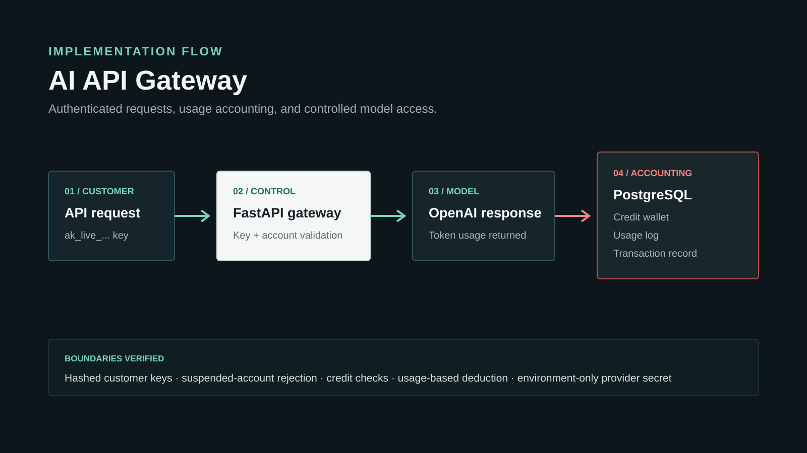

01 / API AND DATA IMPLEMENTATION
AI API Gateway
Controlled model access with customer keys, credit accounting, and a complete usage record.

The engineering problem
A customer-facing AI endpoint needs more than a provider call. Access, account status, available credits, provider usage, and the final transaction must agree before the response is considered complete.
Implementation decisions
- Issue customer keys once and store only their hash.
- Reject inactive keys and suspended accounts before provider work.
- Convert token usage into credits and record the transaction.
- Keep the provider secret in environment configuration.
System
FastAPI · PostgreSQL / Supabase · OpenAI Responses API · Render
API and data integration